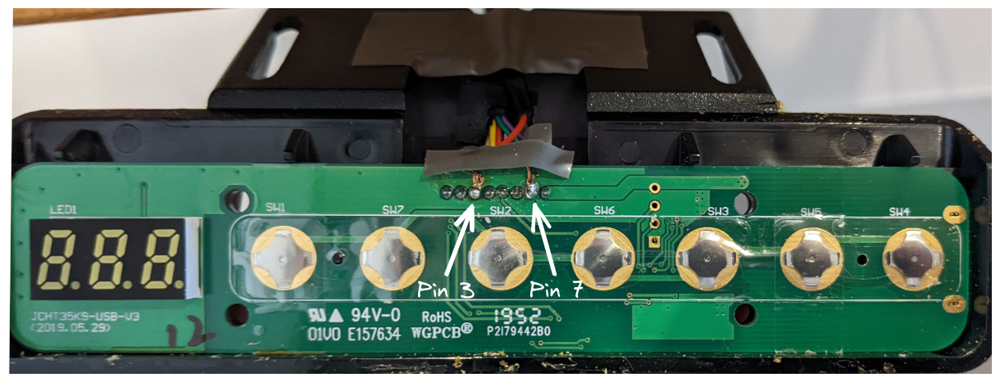
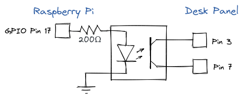

Hacking a standing desk to raise for meetings
Inspired by this post and noticing that my standing desk seemed to have the same control panel, I wanted to do something similar. One thing I wanted to change though is when the desk should be triggered to raise. In that post the author added a random interval of 45 to 60 minutes. Instead I wanted to stand only for my meetings. I’ve found that I can’t stand when I’m actually trying to get focused work done, and having my desk randomly raise and break my concentration when I didn’t expect it to did not sound appealing.
I’ve had this solution running daily for about 4 months now and it’s proved to be very reliable. Here’s what I did:
Requirements
- Raise desk based on my work calendar
- No additional syncing/maintenance should be required
- Raise just before meeting starts to minimise interruptions
- Ignore declined meetings
- Don’t raise again for back-to-back meetings
- If I’ve manually lowered my desk for a meeting, I don’t want it to raise again while I’m still in it
Circuit

This was similar to the original post, I want to be able to programmatically raise the desk by shorting the 3rd and 7th pin on the control panel to trigger the 2 preset. For this I chose to use an optocoupler instead of a relay:

On the raspberry pi, I could then easily trigger the desk with
desk_trigger.py
import RPi.GPIO as GPIO
from time import sleep
DESK_PIN = 17
try:
GPIO.setmode(GPIO.BCM)
GPIO.setup(DESK_PIN, GPIO.OUT)
GPIO.output(DESK_PIN, GPIO.HIGH)
sleep(0.25)
GPIO.output(DESK_PIN, GPIO.LOW)
finally:
GPIO.cleanup()
Code
Code with basic setup instructions is available here: lucashadfield/autodesk.
The basic logic is:
- Use
googleapiclientto fetch calendar entries for the day - Parse and convert to a set of trigger times
- Don’t trigger for back-to-back meetings within a time threshold
- Append trigger times to crontab, overwriting previous times
Every day, cron triggers main.py which generates a set of times the desk should be triggered to raise and writes this to the crontab. For example:
# Desk Actions
59 9 6 6 1 python /home/pi/autodesk/desk_trigger.py
29 13 6 6 1 python /home/pi/autodesk/desk_trigger.py
Limitations
- I’m using a stripped version of my calendar that the API is querying. This only has start and end “busy” times for each meeting. Declined meetings will not show, which is expected, but accepted meetings and meetings I haven’t responded to will come through the same way. This means that any meeting I haven’t explicitly declined by the time my script runs in the morning will be assumed to be accepted and will cause the desk to raise.
- Any meetings added (or declined) during the day will not get picked up. I could fix this by just running the script multiple times per day but this hasn’t been common enough to be necessary.
- I don’t work from home every day. Having an easy way to disable the script when I’m not there would be useful, though it’s not a big deal. Google calendar has a feature to mark where you are working from on each day, which I do use but unfortunately this doesn’t come through in the stripped version of the calendar that I’m querying. If it did, this would probably be a good way to add this logic.
- This is only a one-way solution, I don’t have a way to lower the desk automatically. Doing this would probably involve understanding the desk panel circuit in a bit more detail since I’ve found only preset
2is easy to trigger by shorting a pair of pins.